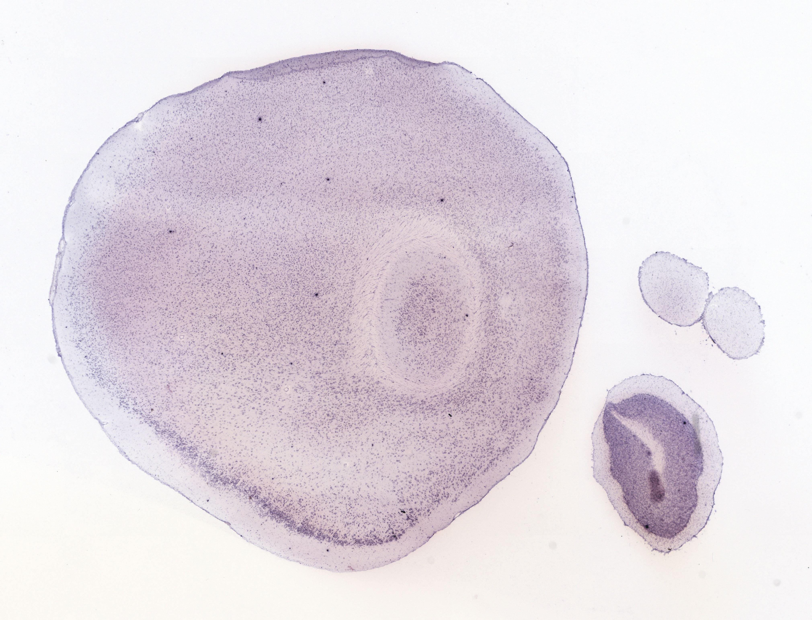
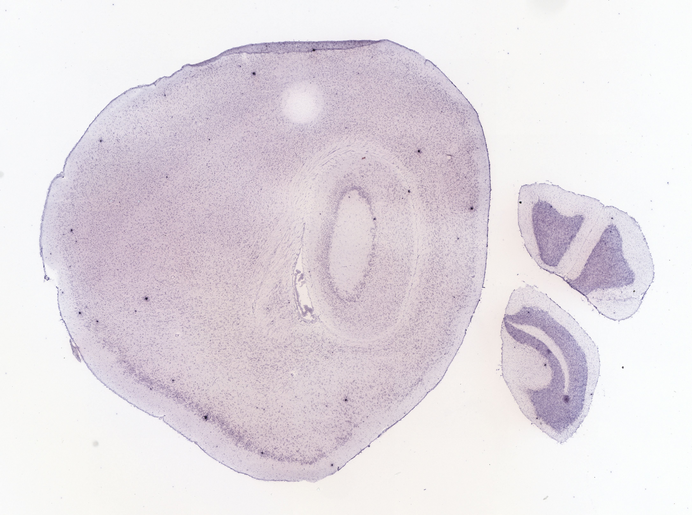
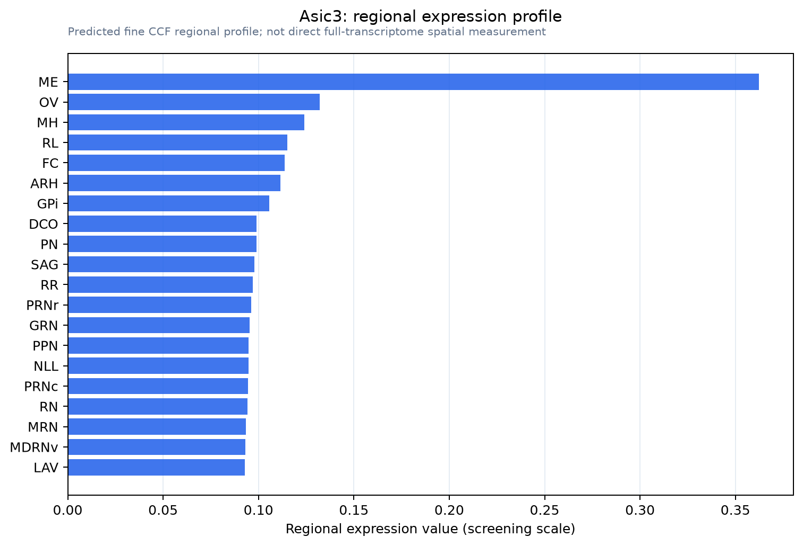

Asic3
Acid-sensing ion channel 3 (ASIC3) (Amiloride-sensitive cation channel 3) (Dorsal root ASIC) (DRASIC)
Spatial tier: STRICT_EXCLUSIVE · Class: ION_CHANNEL · Top region: ME (Median eminence) · Positive regions: 3/554
43.3Discovery Score
35.5Targetability Score
CEvidence grade C
What this means: Asic3: predicted fine-region profile is strict-exclusive, with 3 positive regions out of 554 (limit 12); direct spatial validation is required.
Function in ME: evidence, prediction, innovation
- Gene function
- Asic3 encodes ASIC3 (DRASIC), a proton-gated, amiloride-sensitive cation channel of the ENaC/degenerin family that forms trimers with ASIC1/ASIC2. Mild acidification opens a fast desensitising Na+ current plus a sustained window current that depolarises the cell; lactate and arachidonic acid modulate it. ASIC3 is best known as a peripheral sensor of tissue acidosis in pain.
- Region function
- The median eminence is a circumventricular structure where fenestrated portal capillaries, beta-tanycytes and neurosecretory terminals meet, releasing GnRH, TRH, CRH, GHRH and dopamine into pituitary portal blood and gating blood-borne metabolic signals.
- Published in this region
- inferred No region-specific literature found. Closest: Wang et al. 2020 (Biophys J) profiled pituitary proton sensors and found Asic1, Asic2 and Asic4, but not Asic3, in anterior pituitary secretory cells, while Ohbuchi et al. 2010 (J Physiol) recorded ASIC currents in hypothalamic supraoptic vasopressin neurons.
- Predicted function
- Prediction: If present in median eminence tanycytes or neurosecretory terminals, ASIC3 would sense portal-blood pH and lactate, coupling metabolic state to terminal excitability and Ca2+ entry and thus to hormone release into portal blood. Asic3 knockout or APETx2 blockade should blunt acid-, exercise- or hypoxia-evoked hormone surges without changing baseline endocrine tone.
- Innovation
- ★★★★★ 5/5 No published work places ASIC3 in the median eminence despite this being the one brain site continuously exposed to blood pH changes.
- Tools
- Asic3 knockout mice (Price 2001); blockers APETx2 and amiloride; non-proton agonist GMQ; anti-ASIC3 antibodies; tanycyte access via Rax-CreERT2 and ICV AAV1/AAV5.
- References
Direct evidence located at the region
No Allen ISH section could be located at this region's centroid for the recorded experiments.
Look it up yourself: Allen Mouse Brain ISH for Asic3Allen reference atlas: ME (structure 10671)ABC Atlas MERFISH viewer(in the ABC Atlas choose dataset MERFISH-C57BL6J-638850-CCF, colour cells by gene "Asic3" or by parcellation_substructure "ME")All genes confined to ME + 3-D brain
Direct spatial evidence
MERFISH REGION LOCATOR

DIRECT ALLEN ISH

DIRECT ALLEN ISH

Regional expression figure

Predicted WMB × fine-CCF profile; not direct full-transcriptome spatial measurement.
Spatial profile
Evidence and specificity
- Evidence status
- PREDICTED_FINE
- Direct sources
- None; predicted localization only
- Exclusive threshold
- 12 positive regions out of 554
- Spatial specificity
- 0.291
- Top-region fraction
- 0.117
- Filter status
- PASS
Interpretation limits
- Cell-type-to-region projection is imputed expression, not direct spatial measurement.
- Adult reference atlases do not establish stability across age, sex, strain, state, or disease.
- Transcript abundance does not guarantee protein abundance or genetic-tool performance.